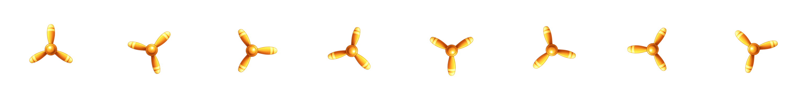
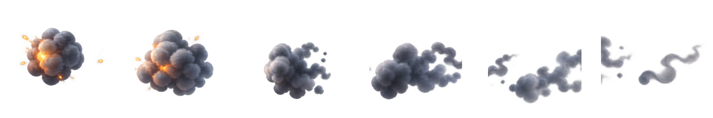
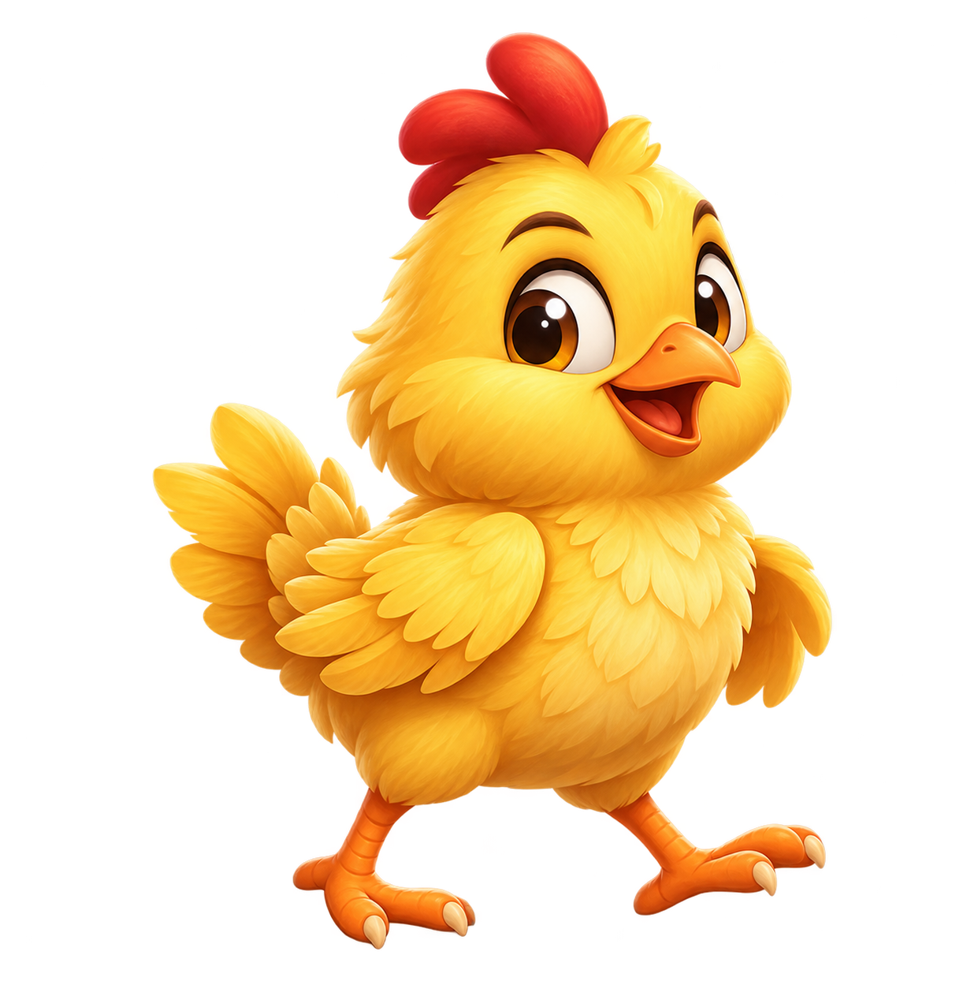

Asset-only preview for the isolated runtime files. The interactive scenes and one-layer calibration controls are available at localhost:3000/?art-debug=1.
Aviator / plane body

Aviator / propeller atlas

Aviator / smoke atlas

Chicken Road / chickChicken Road / independent van